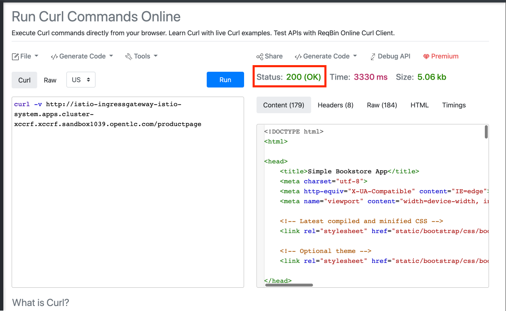
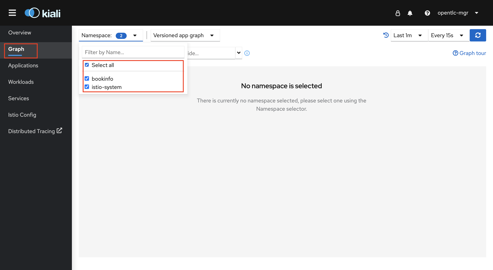
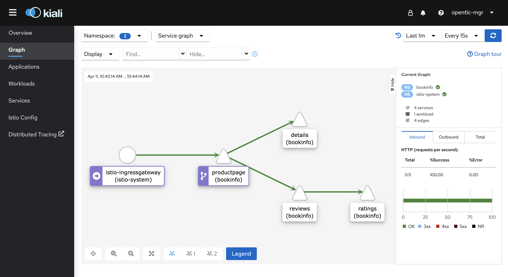
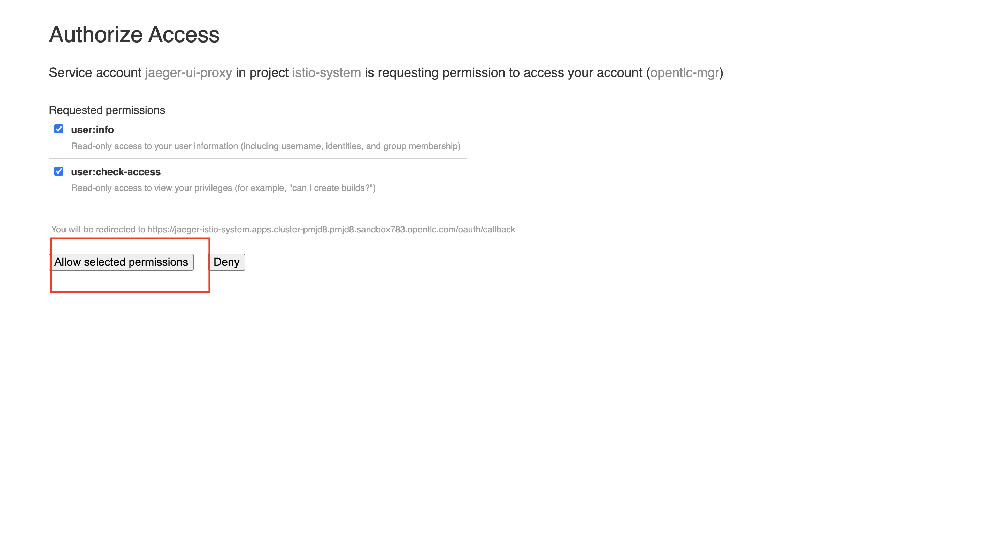
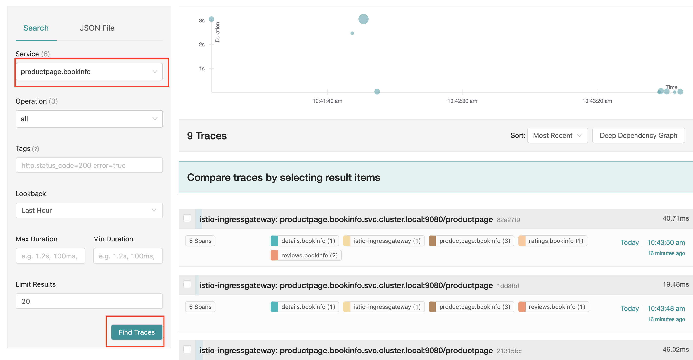
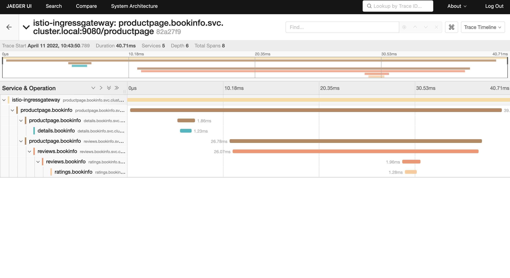

Provision BookInfo
BookInfo Overview
Bookinfo is a sample microservice architecture application that we’ll be using for our workshop.The application provides details about the book such as publisher details, overview, reviews and ratings through the microservices. The BookInfo Application is deployed to bookinfo namespace
Deploy BookInfo
-
Create new project with the name 'bookinfo'
oc new-project bookinfo -
By creating a ServiceMeshMemberRoll resource and specifying the namespaces where your content is located, we can add applications, workloads, or services to your mesh .
-
Create a Custom Resource Definition file for the Control Plane with name 'ServiceMeshMemberRoll_default.yaml' using vim or any other editor on the CLI. Copy paste the below yaml into the file and save it.
apiVersion: maistra.io/v1 kind: ServiceMeshMemberRoll metadata: name: default spec: members: - bookinfo -
Apply the CRD to your cluster using the below command
oc apply -f ServiceMeshMemberRoll_default.yaml -n istio-system -
Provision the application by using the below commands.
-
You can now verify that the bookinfo service is responding by using reqbin.
-
Open a browser window and navigate to:
-
Copy and paste the below command. Do not forget to Replace the cluster wildcard url from the 3scale installation part.
curl -v http://istio-ingressgateway-istio-system.{cluster wildcard url}/productpageYou can also retrieve the cluster wildcard url using the below command
oc get ingresscontroller default -n openshift-ingress-operator -o json | jq -r '.status.domain' -
You should see 200 (OK) status
 -
Send the request 10 times to the product page to generate traffic
-
Open the Kiali Console with URL given below (Do not forget to replace the cluster wildcard url) and login using your OpenShift Cluster Credentials given to you as a part of your welcome email.
https://kiali-istio-system.{cluster wildcard url} -
Navigate to Graph and Select all Namespaces
 -
You should be able to see the traffic from istio-gateway to the bookinfo application as shown below:
If you are unable to see the traffic go back to the reqbin browser and generate more traffic (Repeat steps 7 & 8)
-
You can also trace the calls using Jaeger if you choose to. Open the Jaeger Console with URL given below (Do not forget to replace the cluster wildcard url) and login using your OpenShift Cluster Credentials given to you as a part of your welcome email.
https://jaeger-istio-system.{cluster wildcard url} -
Chose Allow selected permissions
 -
Select the productpage.bookinfo service and click on 'Find Traces'
 -
Click on any of the search results and you should be able to find the traces as shown in the image below

After completion please proceed to next section: Configuring 3scale